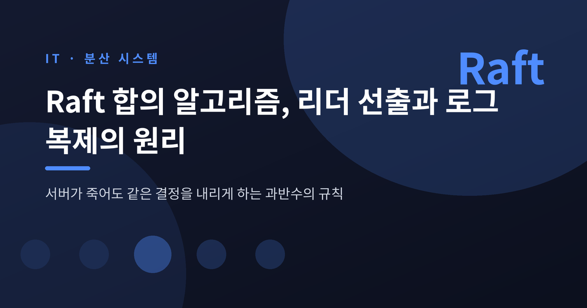
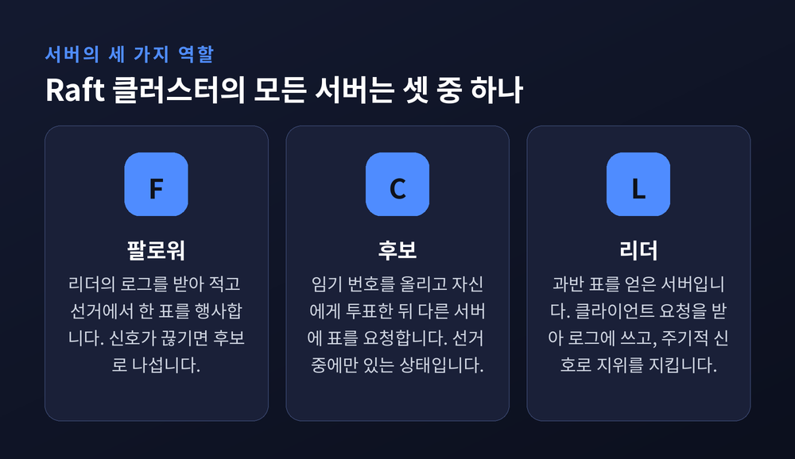
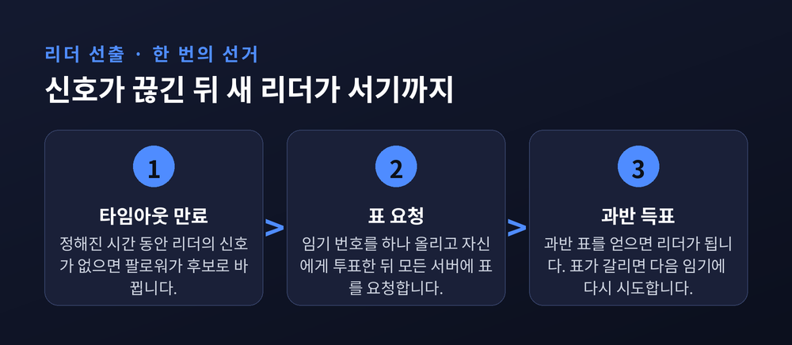
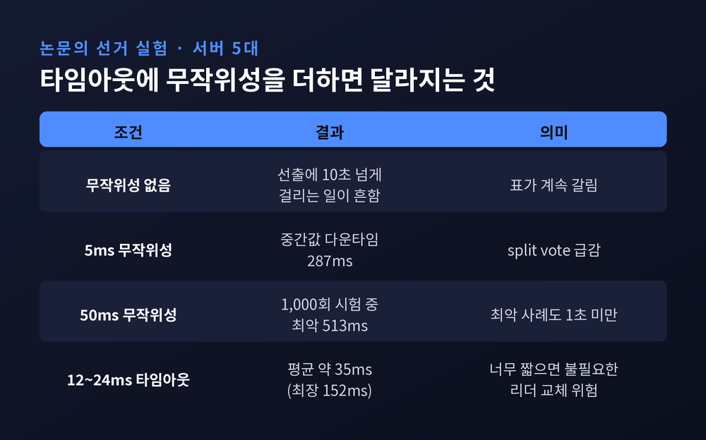
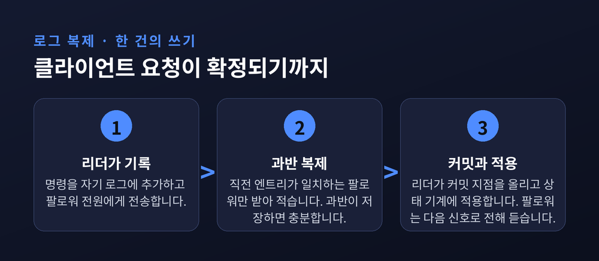
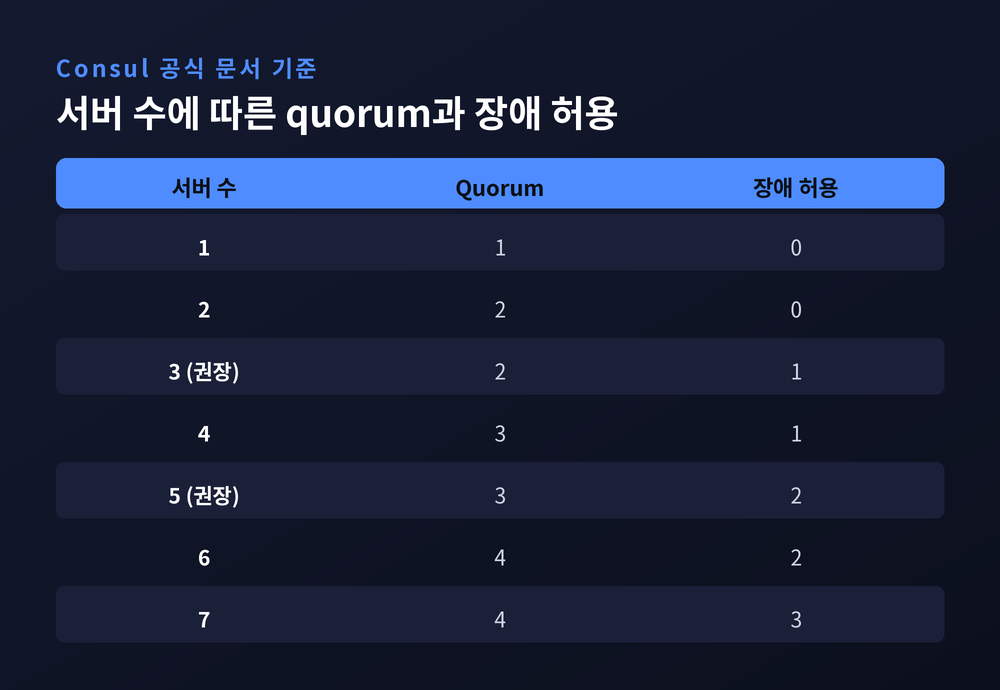
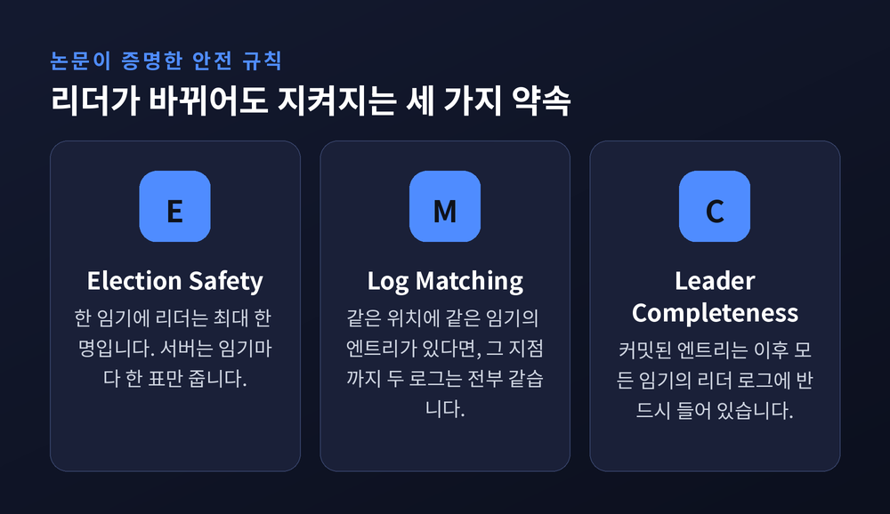

서버가 죽어도 같은 결정을 내리게 하는 과반수의 규칙
오늘은 분산 시스템이 서버 몇 대가 죽어도 같은 결정을 내리는 방법, Raft 합의 알고리즘에 대해 이야기해 보려 합니다.
핵심은 두 가지입니다. 리더를 뽑는 규칙과, 리더의 기록을 나머지 노드에 복제하는 규칙입니다.


서버 한 대에 데이터를 두면 그 서버가 죽는 순간 서비스도 멈춥니다.
그래서 여러 대에 같은 데이터를 복제합니다. 문제는 그다음입니다. 복제본들이 같은 순서로 같은 명령을 적용하지 않으면 서로 다른 상태를 갖게 됩니다.
Raft는 이 문제를 복제 상태 기계(replicated state machine)로 풉니다.
모든 서버가 같은 순서의 로그를 가지면, 그 로그를 차례로 적용한 결과도 같아진다는 발상입니다. 합의 알고리즘의 일은 결국 "로그의 순서를 모든 서버가 똑같이 정하는 것"입니다.
Raft는 2013년 스탠퍼드의 디에고 온가로(Diego Ongaro)와 존 오스터하우트(John Ousterhout)가 발표했고, 요약본은 2014년 USENIX ATC에서 최우수 논문상을 받았습니다.
예전엔 합의라면 Paxos가 사실상 유일한 선택지였습니다. 지금은 이해하기 쉽도록 설계된 Raft가 널리 쓰입니다. 논문의 사용자 연구에서는 학생 43명 가운데 33명이 Paxos보다 Raft 문제를 더 잘 풀었고, 60점 만점 평균은 Raft 25.7점, Paxos 20.8점이었습니다.
한 가지 전제는 짚어 둡니다. Raft는 모든 참여자가 정직하다고 가정합니다. 악의적으로 거짓말하는 노드(비잔틴 장애)까지는 다루지 않습니다.
평소 리더는 팔로워들에게 주기적으로 heartbeat를 보냅니다. 로그 항목이 없는 AppendEntries 메시지입니다.
팔로워는 이 신호가 오는 한 조용히 기다립니다. 정해진 시간, 즉 선거 타임아웃 동안 아무 신호도 받지 못하면 리더가 사라졌다고 판단합니다.
이때 시간을 나누는 단위가 term, 우리말로 임기입니다. 연속된 정수로 번호를 매기며, 각 term은 선거로 시작합니다. 일종의 논리 시계입니다.
후보가 된 서버는 term을 하나 올리고, 자신에게 투표한 뒤 다른 서버에 표를 요청합니다. 각 서버는 한 term에 한 표만 줄 수 있습니다. 그래서 한 term에 리더는 최대 한 명입니다.

과반 표를 얻으면 리더가 됩니다. 더 높은 term의 메시지를 듣게 되면 후보도, 옛 리더도 곧바로 팔로워로 물러납니다.
표가 갈려 아무도 과반을 얻지 못하면 어떻게 될까요? 시간이 흘러 새 term에서 다시 시도합니다.
모든 서버의 타임아웃이 같다면 동시에 후보가 되어 표가 계속 갈립니다.
Raft의 해법은 단순합니다. 각 서버가 타임아웃을 고정 구간, 예를 들어 150~300ms 안에서 무작위로 고르게 합니다. 대개 한 서버가 먼저 깨어나 표를 모읍니다.
논문의 실험(서버 5대, 브로드캐스트 약 15ms)이 그 효과를 보여 줍니다.

무작위성이 없으면 표가 갈려 선출에 10초 넘게 걸리는 일이 흔했습니다. 5ms만 흩어도 중간값은 287ms로 줄었습니다.
다만 타임아웃을 무조건 짧게 잡는 것이 답은 아닙니다. 12~24ms처럼 지나치게 짧은 값은 평균 35ms로 빠르지만 타이밍 조건을 어겨 불필요한 리더 교체를 부를 수 있다고 논문은 경고합니다.
실무 설정도 같은 원리를 따릅니다. etcd 문서는 heartbeat 기본값을 100ms, 선거 타임아웃 기본값을 1,000ms로 두고, 선거 타임아웃은 서버 간 왕복 시간(RTT)의 최소 10배 이상으로 잡으라고 권합니다. 모든 멤버가 같은 값을 쓰는 편이 좋다는 안내도 있습니다.
리더가 뽑히면 클라이언트의 요청은 리더로 모입니다. 리더는 명령을 자기 로그에 추가하고 AppendEntries로 팔로워에게 보냅니다. 응답이 없는 팔로워에게는 계속 재시도합니다.
핵심 규칙은 하나입니다. 엔트리가 서버 과반수에 저장되면 커밋합니다.
3대 중 2대에 기록되었다면 리더는 commitIndex를 올리고 상태 기계에 적용합니다. 팔로워는 이후 heartbeat로 commitIndex를 전해 듣고 자기 쪽에서도 적용합니다. 뒤쪽 엔트리를 커밋하면 앞선 엔트리도 함께 커밋됩니다.

팔로워의 로그가 리더와 어긋나 있으면 어떻게 할까요?
AppendEntries에는 새 엔트리 바로 앞 엔트리의 index와 term이 함께 실립니다. 팔로워가 같은 index·term의 엔트리를 찾지 못하면 요청을 거절합니다. 리더는 한 칸씩 뒤로 물러나 두 로그가 일치하는 지점을 찾고, 그 뒤부터 팔로워의 로그를 리더의 로그로 덮어씁니다.
덮어쓰이는 쪽은 아직 커밋되지 않은 엔트리입니다. 한 사례를 보겠습니다. 장애로 3대 클러스터에서 떨어져 나간 옛 리더가 index 4에 Put(x, 4)를 적었지만 과반에 닿지 못했다고 합시다. 새 리더가 같은 자리에 Put(x, 5)를 기록하면 옛 리더가 돌아왔을 때 충돌한 엔트리는 교체됩니다. 커밋된 데이터는 하나도 잃지 않습니다.
리더가 바뀌어도 커밋된 결정이 살아남으려면 아무 서버나 리더가 되어서는 안 됩니다.
Raft는 투표 단계에서 이를 막습니다. 투표자는 후보의 로그가 자기 로그보다 최소한 같게 최신일 때만 표를 줍니다. 마지막 엔트리의 term이 높은 쪽이 더 최신이고, term이 같으면 더 긴 로그가 최신입니다.
과반 복제된 엔트리는 과반 서버가 가지고 있습니다. 과반의 표를 받아야 리더가 되므로, 새 리더는 반드시 그 엔트리를 가진 서버와 겹치는 표를 받습니다. 그 서버들은 낡은 로그의 후보에게 표를 주지 않습니다.

한 가지 함정이 더 있습니다. 논문의 Figure 8로 알려진 사례입니다.
이전 term의 엔트리가 과반에 저장되었더라도, 이후 term의 리더가 그것을 덮어쓸 수 있습니다. 그래서 리더는 이전 term의 엔트리를 복제본 개수만 세어 커밋하지 않습니다. 자기 term의 엔트리가 과반에 복제될 때 그 앞의 엔트리가 간접적으로 함께 커밋됩니다.
Raft의 가용성은 과반수(quorum)에 달려 있습니다. 서버가 N대면 (N/2)+1대, 소수점은 버립니다. 2n+1대로 구성하면 n대의 장애를 견딥니다.

표에서 눈여겨볼 곳은 짝수입니다. 4대는 quorum이 3이라 장애 허용은 3대 구성과 같은 1대입니다. 서버만 늘고 내성은 그대로입니다.
그래서 HashiCorp Consul 문서도 프로덕션에는 3대 또는 5대를 권합니다. 논문도 서버 5대 클러스터가 두 대의 장애를 견딘다고 설명합니다.
네트워크가 갈라질 때도 같은 셈이 적용됩니다. etcd 문서의 예처럼 4대가 3+1로 갈라지면 리더가 있는 3대 쪽이 quorum을 유지해 선거 없이 계속 일합니다. 2+2로 갈라지면 어느 쪽도 quorum 3에 못 미쳐 리더가 사라집니다. 새 쓰기를 커밋할 수 없다는 뜻입니다.
로그는 영원히 쌓일 수 없습니다. 그래서 스냅샷으로 현재 상태 전체를 저장하고 그 이전 로그를 버립니다. etcd는 기본적으로 변경 10,000회마다 스냅샷을 찍습니다.
서버를 늘리거나 바꾸는 일도 위험합니다. 구성이 바뀌는 순간 두 개의 리더가 공존하지 않도록, 논문은 옛 구성과 새 구성 양쪽의 과반을 모두 요구하는 joint consensus를 제시했습니다. 박사논문은 한 번에 한 서버씩 바꾸는 방식을 설명합니다. 새로 들어온 서버가 로그를 따라잡기 전에 quorum에 끼면 위험하므로, etcd는 투표권 없는 learner로 먼저 합류시킨 뒤 따라잡은 다음에 승격합니다.
한계도 분명합니다. 쓰기를 한 리더가 전담하므로 병목이 될 수 있습니다. 비잔틴 장애에도 대응하지 않습니다. Wikipedia에 따르면 단일 서버 멤버십 변경에서는 2014년에 안전성 버그가 발견되기도 했습니다.
그럼에도 쓰임새는 넓습니다. etcd와 이를 쓰는 Kubernetes를 비롯해 CockroachDB, TiKV, Redpanda, ClickHouse Keeper, NATS JetStream 같은 시스템이 Raft 계열을 사용합니다. etcd의 Raft 라이브러리는 2016년 기준 하루 수만 개 클러스터를 움직인다고 소개됩니다.
정리하면 이렇습니다.
Raft는 어려운 문제를 둘로 쪼갭니다. 누가 말할 것인가는 리더 선출이, 무엇이 확정인가는 과반 복제가 답합니다.
"리더는 바뀌어도, 과반이 받아 적은 기록은 바뀌지 않는다."
서버가 죽어도 같은 결정을 내린다는 말은 마법이 아닙니다. 과반이라는 단순한 셈 위에서, 겹치는 표와 겹치는 로그가 만들어 내는 결과입니다.
참고 소스